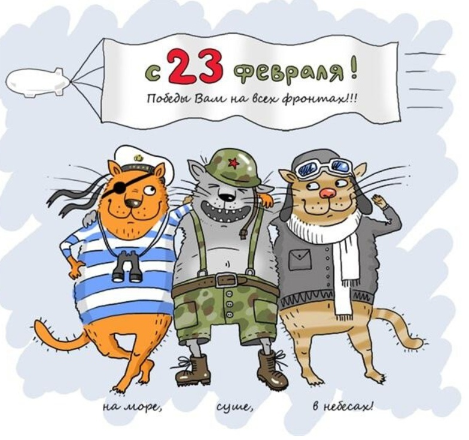
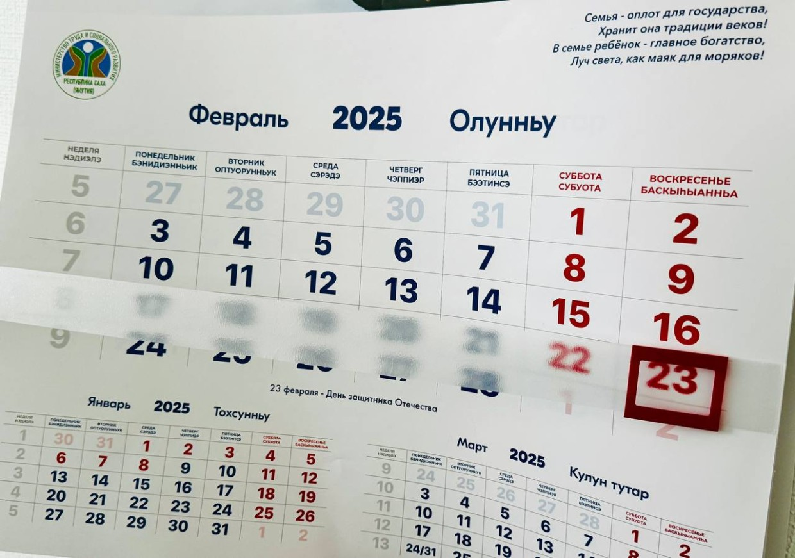

Как празднуют 23 февраля
"Это день, когда мы самыми разными способами пытаемся не работать."
 До 1949 года 23 февраля считался памятным днем, а не праздником. С 1949 года честь доблести военнослужащих начали проводить торжественные мероприятия. Они проходили с парадом техники, концертами и пиротехникой. По словам Анастасии Назукиной, еще со времен Советского Союза в этот день вручаются государственные награды ветеранам войны и солдатам, участвующим в различных военных кампаниях (иностранных тоже), а также ветеранам боевых действий. Скорее всего, отсюда и берет начало традиция – дарить подарки мужчинам в этот день. В какой-то момент праздник перестал быть просто профессиональным, он стал частью повседневной жизни. Не только днем военнослужащих, но и всех мужчин, независимо от возраста, потому что они могут стать потенциально на защиту Родины.
"Одна из традиций – поздравления. К этому дню мужчины и женщины, имеющие отношение к военной службе получают памятные открытки от государства. Обычно они сдержанного дизайна с обязательным рисунком государственного флага", – рассказывает культуролог Марина Бочарова.